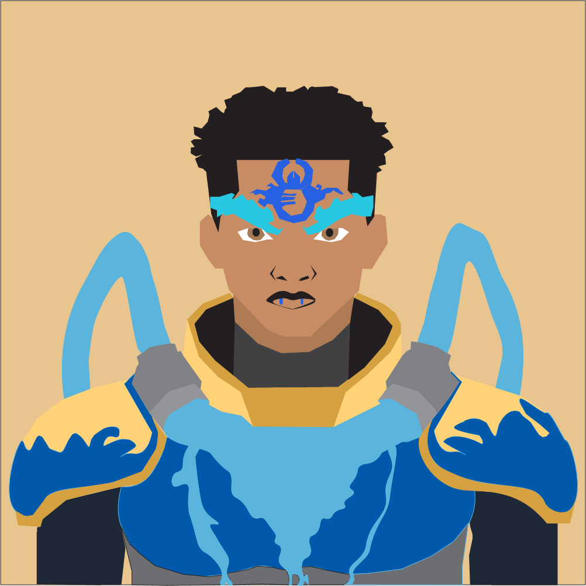

Original Adobe Illustrator character concept.

This original vector character was created in Adobe Illustrator and became the foundation for the Scorix Verso animation and website project.
The design combines desert themes, Scorpio symbolism, and flowing water energy to represent resilience and hidden power.